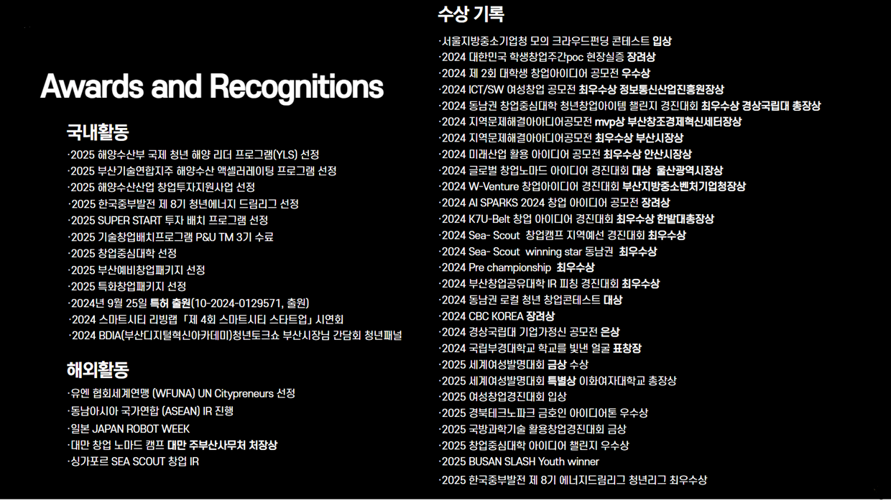

회사 소개
안다미로는 해양 사고 대응의 지연과 복잡한 보험 청구 문제를 해결하기 위해 설립된
AI 기반 해양 데이터 솔루션 기업입니다.
우리는 사고 현장의 데이터를 빠르고 정확하게 수집·분석하여
해양 산업의 안전과 지속 가능한 발전을 지원합니다.

Oceanic Advanced Solutions for Integrated Sustainability
OASIS는 바다(Oceanic)와 첨단 솔루션(advanced Solutions)을 연결하여
해양 산업의 지속 가능성(integrated sustainability)
을 실현한다는 뜻을 담고 있습니다.
단순한 사고 관리 플랫폼을 넘어 해양 환경과 산업을 함께 살리는
해양 데이터 혁신 브랜드입니다.
연혁 및 성과
설립 이후 안다미로는 독자적 기술력과 실행력으로 각종 정부 지원 사업 및 공모전 등에서 성과를 이루며 성장해왔습니다.
